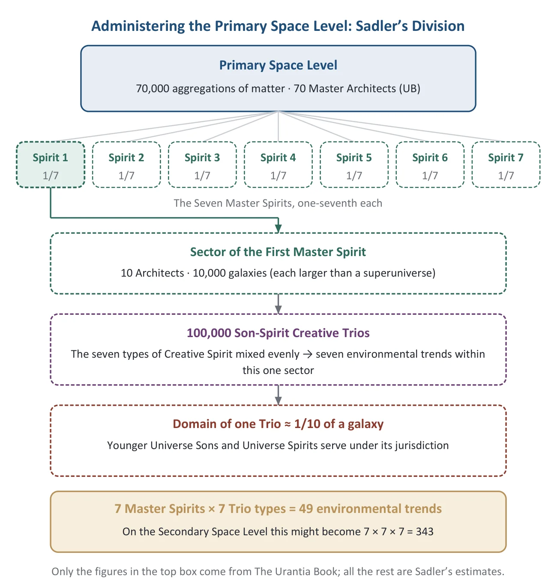
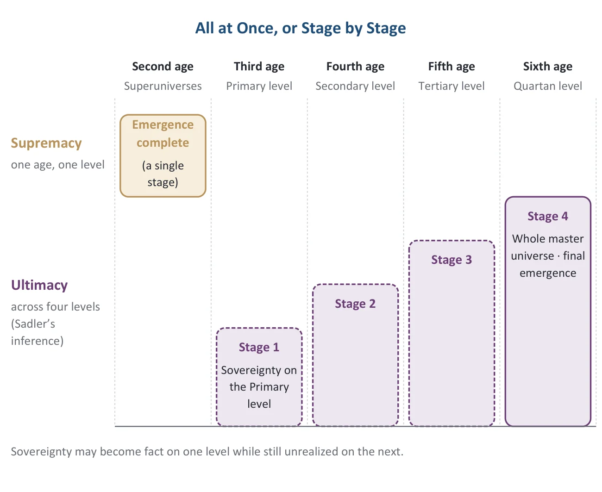

La deuxième antithèse : le défi de l’espace extérieur
Original : L’Histoire absonite, chapitre VII, La deuxième antithèse (pp. 75–83)
DANS CE CHAPITRE
Une fois que l’Être Suprême a achevé sa croissance, le maitre univers entre dans ce que l’on peut appeler les âges post-suprêmes. Au cours de quatre âges, du troisième au sixième, la première Trinité expérientielle organise les quatre niveaux de l’espace extérieur, et au terme de ce long travail apparait Dieu l’Ultime. Sadler soutient qu’il ne manquera qu’une seule chose aux créations de l’espace extérieur : l’expérience finie. Ce manque devient une ouverture pour les êtres qui ont grandi dans le grand univers, et leur départ à sa rencontre est ce qu’il nomme l’Aventure Ultime. Dans ce chapitre, Sadler chiffre l’administration du niveau d’espace primaire, entrevoit un nouveau partenariat de déité duelle dans lequel l’Esprit s’unit au Suprême, et se demande si l’Ultimité pourrait émerger en plusieurs étapes plutôt qu’en une seule fois.
1. Les âges post-suprêmes (orig., p. 75)
Sadler propose une nouvelle manière de nommer les âges, en prenant l’Être Suprême comme point de référence. Le présent deuxième âge de l’univers est l’ère durant laquelle le Suprême évolue et grandit. Selon ce calcul, le premier âge, qui l’a précédé, est un âge pré-suprême, et les âges de l’espace extérieur qui suivent l’achèvement de la croissance du Suprême peuvent être appelés âges post-suprêmes.
Les âges post-suprêmes sont au nombre de quatre, à savoir les âges trois à six. Chacun correspond à un niveau de l’espace extérieur. Ce qui les relie, selon le résumé de Sadler, c’est que durant tous les quatre la première Trinité expérientielle travaille à trois buts :
- l’unification de la première Trinité expérientielle elle-même
- l’achèvement du maitre univers
- l’émergence de Dieu l’Ultime
Le Livre d’Urantia dit de même que l’apparition du Suprême ouvrira la voie au plein fonctionnement de cette Trinité.
Cet évènement conduira certainement au fonctionnement parachevé de la première Trinité expérientielle —l’union des Créateurs Suprêmes, de l’Être Suprême et des Architectes du Maitre Univers. Cette Trinité est destinée à effectuer la suite de l’intégration évolutionnaire du maitre univers créé.106:3.2
Ce sont les âges où les forces et agents créateurs du Paradis s’étendent à grande échelle dans l’espace extérieur. À leurs côtés partent des administrateurs du Paradis et de Havona, ainsi que tous les « vétérans » expérientiels qui ont traversé l’âge évolutionnaire des superunivers. Sadler trouve une grande signification dans ce partenariat. Pour la première fois, les parfaits et ceux qui ont été rendus parfaits forment une seule équipe et entreprennent une tâche commune. Il appelle cette entreprise conjointe l’Aventure Ultime, nom destiné à faire pendant à l’Aventure Suprême rencontrée dans les chapitres précédents.
2. Le besoin cytoplasmique élargit la fonction nucléaire (orig., pp. 76–77)
Deux Déités expérientielles affinent les potentiels
À partir de quoi les créateurs créent-ils ? Sadler revient à une idée du chapitre précédent. La matière première de la création est le potentiel, la possibilité non encore réalisée, qui découle des trois Absolus. Mais, parce que ces potentiels sont absolus, ils ne sont d’aucune utilité directe aux créateurs qui travaillent sur des niveaux finis. Quelque chose doit d’abord les préparer.
Dans l’exposé de Sadler, la préparation se fait en deux étapes. L’Ultime, qui se tient en contact immédiat avec le niveau absolu, organise d’abord le potentiel absolu afin qu’il devienne sensible à l’action créatrice ; le Suprême l’affine ensuite davantage, en l’adaptant aux niveaux finis. Tous deux, dit-il, le font déjà bien avant leur pleine émergence. On pourrait comparer cela au minerai extrait d’une mine : une fonderie le transforme en métal, puis un atelier lamine ce métal en feuilles utilisables. Les créateurs ne peuvent « créer » que parce que la matière a été ainsi préparée. Le raffinage en deux étapes est le modèle interprétatif de Sadler. Le Livre d’Urantia dit que les phénomènes absonites sont des actes de l’Ultimité de la Déité, mais il ne divise pas le processus en stades comme une chaine de production.
Où que ce soit dans le maitre univers, quand le temps et l’espace sont transcendés, ce phénomène absonite est un acte de l’Ultimité de la Déité.0:1.12
Le potentiel fini s’épuise
Lors du passage du deuxième au troisième âge, un changement important affecte le potentiel disponible pour la création et la croissance. Parce que le Suprême grandit maintenant, les êtres créés ou évoluant durant cet âge peuvent partager cette croissance. Mais, lorsque l’âge se termine, la croissance du Suprême se termine aussi, et le potentiel d’expérience finie est épuisé. Étant fini, il peut s’épuiser.
Sadler illustre cela en comparant deux Esprits Créatifs. Un Esprit Créatif qui sert aujourd’hui dans un univers local peut produire des séraphins capables de croitre par l’expérience finie, parce qu’elle puise dans le potentiel du Suprême en croissance. Un Esprit Créatif qui servira sur le niveau d’espace primaire au troisième âge sera de nature identique à sa sœur ainée, mais elle ne produira jamais de tels séraphins, car la matière n’existera plus. Elle travaillera avec un potentiel post-suprême, probablement subabsolu plutôt que fini, et ses enfants seront des êtres dépourvus de toute capacité innée d’expérience finie.
Une création à laquelle il manque une chose
À quoi ressembleront les univers de l’espace extérieur, et qui seront leurs natifs ? Sadler admet qu’il ne peut répondre de manière positive, puisque ces questions se situent entièrement hors de la portée de notre expérience. De même que les natifs de Havona ne pouvaient nous imaginer avant d’avoir rencontré les premiers pèlerins ascendants, de même nous ne pouvons nous représenter les êtres de l’espace extérieur. Une chose est pourtant certaine. Nulle part dans l’espace extérieur, et chez aucun de ses natifs, il n’y aura d’expérience finie. Ce n’est pas une conjecture de Sadler ; le Livre d’Urantia lui-même le prévoit.
Cet univers viendra à l’existence avec un formidable handicap expérientiel : il sera privé de participer à l’évolution du Tout-Puissant Suprême.31:10.11
Ce manque est notre chance
C’est précisément dans ce manque que Sadler situe notre place. La qualité même qui manque dans l’espace extérieur est une qualité que nous avons reçue en abondance. Nous sommes des enfants du Suprême. L’expérience finie se trouve au cœur de la nature de tout être expérientiel et évolutionnaire né dans le grand univers. À mesure que le Suprême a grandi en nous, nous avons grandi en lui, et ainsi nous ressemblons au Suprême, le Dieu de l’expérience finie.
Même en tant que finalitaires, nous serons encore inachevés. Le Livre d’Urantia décrit les finalitaires comme des esprits du sixième stade qui n’ont atteint la destinée que dans la mesure où le permet l’âge présent.
Ils sont arrivés à la limite présentement accessible de perfection des créatures, mais non à la finalité de service des créatures. Ils ont fait l’expérience de l’adoration de la Déité dans sa plénitude, mais non de la finalité d’aboutissement de la Déité expérientielle.31:3.6
Sadler s’attend à ce que ces buts restants deviennent accessibles par le service dans l’espace extérieur. En apportant l’expérience finie là où il n’y en a pas, et en comblant ce vide, nous dépasserons nous-mêmes nos limites présentes. Cela retrace le chemin de nos prédécesseurs du Paradis et de Havona, qui ont eux aussi dépassé leurs propres limites en partant servir dans des superunivers dépourvus de perfection divine.
Sadler et le texte : les trois buts non atteints des finalitaires
Sadler énumère les buts que les finalitaires n’ont pas encore atteints : le statut ultime de créature, la finalité du service des créatures et la finalité de l’aboutissement de la Déité expérientielle. Le texte formule le premier point ainsi : « la finalité de statut spirituel ultime » [31:3.6]. Le sens est proche, mais Sadler a paraphrasé. Le texte dit aussi que même les finalitaires n’ont pas encore trouvé l’Être Suprême, et qu’ils n’ont guère de chances de le trouver avant de devenir des esprits du septième stade et que le Suprême n’exerce effectivement des fonctions dans les univers extérieurs [56:6.4]. L’inachèvement des finalitaires est une affirmation du texte avant d’être une interprétation de Sadler.
3. Le défi de l’Aventure Ultime (orig., pp. 77–78)
Deux défis, deux soustractions
À l’aube du temps, Dieu a placé devant les citoyens de la création établie et éternelle l’imperfection intrinsèque des sept superunivers. Les êtres parfaits du Paradis-Havona ont répondu à ce défi en s’aventurant dans les incertitudes du niveau d’espace des superunivers, encore inorganisé ; ce fut l’Aventure Suprême. Au même moment, Dieu a offert aux créatures imparfaites l’invitation : « Soyez parfaits comme moi-même je suis parfait », et les forces et personnalités de perfection ont porté ce défi jusqu’aux mondes évolutionnaires. Sadler ajoute que la perfection infinie de Dieu est devenue quelque chose que nous pouvions saisir lorsque Jésus l’a humanisée.
Maintenant, Dieu lance un second défi à toute la création. Sadler compare les deux défis à des actes de soustraction. Dans le premier, Dieu a refusé aux nouveaux superunivers la perfection innée, et la tâche qui en résultait était de rendre parfait l’imparfait par la croissance et l’expérience dans le temps et l’espace. Dans le second, Dieu retient de nouveau quelque chose : cette fois, la possibilité de croissance par l’expérience finie. Chaque citoyen du grand univers est appelé à compenser ce manque dans les créations extérieures.

Révélateurs du Suprême
Sadler croit que d’ici là nous serons vraiment devenus des enfants de l’Être Suprême et que nous serons donc capables de relever ce défi ; même notre mental sera relié au mental du Suprême. Il espère que, de même que Jésus a révélé le Père Universel, nous révèlerons Dieu le Suprême aux nouvelles créatures des univers extérieurs. Le Livre d’Urantia décrit ainsi l’expérience postfinalitaire.
2. L’expérience postfinalitaire, ou révélant Dieu, dans laquelle la réalisation de soi subit une expansion créative par la révélation de l’Être expérientiel Suprême aux intelligences cherchant Dieu, mais n’ayant pas encore atteint les niveaux divins où elles sont semblables à Dieu.112:2.18
Sadler nous juge bien équipés pour cette tâche, puisque trois choses auront été fusionnées en nous : la divinité conférée par l’Ajusteur, la sagesse expérientielle durement acquise au cours de l’ascension vers le Paradis, et un long service dans les superunivers en croissance. Là-bas, nous affronterons de nouveaux problèmes de pure immensité, des situations imprévisibles et des choses que nous ne pouvons expliquer. Comme de nouvelles créatures se tenant à l’aube d’une nouvelle création, nous redeviendrons jeunes, nous grandirons de nouveau, et nous connaitrons une fois encore l’élargissement soudain de tous les horizons.
Un défi d’étendue et de profondeur
Sadler souligne que ce défi a de la profondeur aussi bien que de l’étendue. Devant nous se trouvent non seulement l’immensité du temps, de l’espace et de la masse des univers extérieurs, mais aussi une recherche renouvelée du Père Universel. Ayant trouvé le Père en tant que Suprême, pouvons-nous maintenant le trouver en tant qu’Ultime ? Le Livre d’Urantia brosse le même tableau.
Certainement, surement et inexorablement, l’énigme de la Déité émergente de Dieu l’Ultime mettra au défi les citoyens devenus parfaits des univers établis, exactement comme leurs ancêtres évolutionnaires, qui se débattaient, furent jadis mis au défi par la recherche de Dieu le Suprême.117:7.17
4. L’administration du niveau d’espace primaire (orig., pp. 79–81)
Les faits connus
Sadler resserre maintenant son attention sur le troisième âge, le premier des âges post-suprêmes, et sur l’organisation du niveau d’espace primaire. Il part de quelques faits fournis par le Livre d’Urantia. Soixante-dix-mille vastes agrégats de matière s’y rassemblent, chacun d’eux dépassant déjà en taille n’importe quel superunivers.
…où nous pouvons déjà identifier le groupement d’au moins soixante-dix-mille agrégats de matière dont chacun est plus grand que n’importe quel superunivers du temps présent.31:10.19
En outre, le texte assigne soixante-dix Maitres Architectes au niveau d’espace primaire [31:9.6]. À partir d’ici, l’arithmétique est celle de Sadler. En répartissant soixante-dix-mille agrégats entre soixante-dix Architectes, on obtient environ mille pour chaque Architecte.
Sept Maitres Esprits et soixante-dix-mille galaxies
Sadler trouve de bonnes raisons de croire que les Sept Maitres Esprits prendront en charge des secteurs de l’espace extérieur dans le prolongement de leurs juridictions superuniverselles actuelles. S’il en est ainsi, chaque Maitre Esprit supervise un septième des soixante-dix-mille galaxies, soit dix-mille d’entre elles, ainsi que dix Architectes. Chacune de ces galaxies est une sorte de « super-superunivers », plus grande que n’importe quel superunivers.
Si chaque Maitre Esprit façonne les tendances du milieu d’un secteur de l’espace extérieur comme il façonne maintenant celles de son propre superunivers, alors le niveau d’espace primaire reproduirait le modèle des sept superunivers à une échelle beaucoup plus grandiose. Sept milieux, semblables au Père, semblables au Fils, semblables à l’Esprit, semblables au Père-Fils, semblables au Père-Esprit, semblables au Fils-Esprit et semblables au Père-Fils-Esprit, laisseraient une empreinte indélébile sur les natifs de chaque secteur. Sadler trouve ce tableau commode mais trop simple, car les Trios Créatifs Fils-Esprit compliquent considérablement les choses dès qu’on les fait entrer en compte.
Les Trios Créatifs Fils-Esprit et quarante-neuf milieux
Comme nous l’avons vu au chapitre 7, Sadler a raisonné que les sept-cent-mille couples de Fils Créateurs et d’Esprits Créatifs des univers locaux trinitiseraient, à la fin du deuxième âge, des Créateurs Associés et deviendraient ainsi des Trios Créatifs Fils-Esprit. Si ce raisonnement tient, exactement sept-cent-mille Trios seront affectés à l’espace extérieur.
Sadler ajoute un point supplémentaire : les Trios ne seront pas tous semblables. Chaque Esprit Créatif porte la ressemblance du Maitre Esprit du superunivers dans lequel elle a servi ; il y a donc sept types d’Esprit Créatif, et par conséquent sept types de Trio, cent-mille de chaque. Parce que les courants du maitre univers semblent favoriser la variété plutôt que l’uniformité, il s’attend à ce que les sept types soient répartis uniformément dans le secteur de chaque Maitre Esprit. Si cent-mille Trios se partagent les dix-mille galaxies du secteur du premier Maitre Esprit, chaque Trio gouverne environ un dixième de galaxie. Cela seul est bien plus grand qu’un dixième de superunivers avec ses cent-mille univers locaux.

Puisque chaque Trio façonnera de même le milieu de son propre domaine, sept tendances de milieu apparaissent dans le secteur d’un seul Maitre Esprit, et pour l’ensemble des sept secteurs elles totalisent 7 × 7 = 49. Si les sept superunivers donnent sept types de créatures et d’Esprits Créatifs, le niveau d’espace primaire donnerait quarante-neuf types distincts. Sadler s’attend à ce que cette « puissance de sept » se poursuive au niveau suivant, donnant 343 sur le niveau d’espace secondaire. À l’appui, il fait remarquer que le nombre de Maitres Architectes pour chaque niveau successif se multiplie par sept exactement de cette manière [31:9.5–9].
| Niveau d’espace | Maitres Architectes affectés | Types de milieu estimés par Sadler |
|---|---|---|
| Sept superunivers | 7 | 7 |
| Niveau d’espace primaire | 70 | 49 (7×7) |
| Niveau d’espace secondaire | 490 | 343 (7×7×7) |
| Niveau d’espace tertiaire | 3 430 | multiplication par sept supposée se poursuivre |
| Niveau d’espace quaternaire | 24 010 | multiplication par sept supposée se poursuivre |
Fils d’Univers et Esprits d’Univers du troisième âge
Enfin, Sadler se tourne vers le nombre des Fils Créateurs. Le Livre d’Urantia dit qu’il y en a déjà plus de sept-cent-mille, et que rien n’a été révélé sur la destinée de ceux qui dépassent ce nombre.
De plus, nous notons que le nombre constamment croissant des Fils Créateurs dépasse déjà le nombre fixe des Unions des Jours. Mais, en ce qui concerne la destinée des Micaëls au-delà de sept-cent-mille, nous n’en avons jamais été informés.21:1.4
Puisqu’il y a exactement sept-cent-mille univers locaux, Sadler en déduit que les Fils d’Univers et Esprits d’Univers en surnombre seront envoyés organiser des univers dans l’espace extérieur. Le niveau d’espace primaire verrait alors deux ou trois classes de Fils d’Univers et d’Esprits d’Univers à l’œuvre. Il suppose que les Fils et Esprits plus jeunes serviront sous la juridiction des Trios Créatifs, un peu comme les dirigeants des secteurs majeurs d’un superunivers sont maintenant en relation avec les dirigeants des univers locaux. Leur nombre, suggère-t-il, pourrait atteindre dix-mille fois celui de ceux qui ont servi dans les sept superunivers.
5. L’Esprit et le Suprême : la Déité Duelle de l’espace extérieur (orig., pp. 81–82)
Un partenariat dominant pour chaque âge
Sadler soutient que chaque âge de l’univers a son propre partenariat dominant de déité duelle. Au premier âge, le Père-Fils dirigeait ; au deuxième, le Fils-Esprit des univers locaux. Pour les âges qui suivent l’émergence du Suprême, il prévoit qu’un nouveau couple prendra cette place : un partenariat Esprit-Suprême.
| Âge | Partenariat dominant | Résultat |
|---|---|---|
| Premier âge (Havona) | Père-Fils | Personnalisation de l’Esprit Infini ; formation de la Trinité du Paradis |
| Deuxième âge (superunivers) | Fils-Esprit (Fils Créateur et Esprit Créatif) | 700 000 Créateurs Associés ; Trios Créatifs Fils-Esprit (conjecture de Sadler) |
| Du troisième au sixième âge (espace extérieur) | Esprit-Suprême | Imprévisible |
La fonction du Suprême dans l’espace extérieur
Le Livre d’Urantia parle de trois fonctions de l’Être Suprême. Dans l’univers central, il fonctionne comme une personnalité spirituelle, dans le grand univers comme une personnalité de pouvoir, et sa troisième fonction, dans le maitre univers, est encore latente.
La fonction tertiaire du Suprême, dans le maitre univers, est actuellement latente et n’existe que sous forme d’un potentiel mental inconnu. Nul ne sait exactement ce que révèlera ce troisième développement de l’Être Suprême.116:0.5
Le texte rapporte ensuite que certains croient que le Suprême étendra son pouvoir en tant que super-tout-puissant des univers extérieurs. Sadler refuse de choisir entre « super-tout-puissant » et « potentiel mental » ; il pense que les deux sont probables. Dans les deux cas, le Suprême exercera une influence directe et active sur les univers extérieurs et travaillera la main dans la main avec l’Esprit.
Où prend forme le partenariat Esprit-Suprême
Ce sont les Sept Maitres Esprits qui distribuent l’Esprit Infini aux univers situés au-delà de Havona. Sadler s’attend donc à ce que le partenariat Esprit-Suprême se forme principalement comme un lien unissant le Suprême aux Maitres Esprits. Cela ne signifie pas que le Suprême cesse de coopérer avec l’Esprit Infini ou rompe ses relations avec les Esprits Créatifs. Quant à ce que produira ce partenariat, Sadler s’avoue démuni. Le partenariat Père-Fils a personnalisé l’Esprit Infini et a conduit à la Trinité du Paradis ; le partenariat Fils-Esprit peut donner naissance à des Créateurs Associés. Mais, pour le résultat du partenariat Esprit-Suprême, dit Sadler lui-même, le Livre d’Urantia n’offre absolument aucune base de prédiction.
6. Les étapes de l’émergence de l’Ultime (orig., pp. 82–83)
Jusqu’ici, Sadler a traité ensemble les quatre niveaux de l’espace extérieur et leurs quatre âges comme un seul bloc. C’est globalement fondé, mais il est un point sur lequel il faut les considérer séparément : l’émergence de Dieu l’Ultime.
L’Être Suprême émerge comme le résultat de ce qui se passe en un seul âge et sur un seul niveau d’espace. L’Ultimité, au contraire, émerge comme le résultat d’une croissance créatrice parachevée à travers cinq âges et cinq niveaux d’espace. Il s’ensuit que l’émergence de l’Ultime n’a pas besoin de se produire en une seule fois ; elle peut se dérouler en plusieurs étapes. Par exemple, la souveraineté de l’Ultime pourrait être établie sur le niveau d’espace primaire avant l’ouverture du niveau d’espace secondaire. La souveraineté ultime serait alors un fait sur le premier niveau tout en restant non réalisée sur le deuxième, ce qui ne s’est jamais produit pendant l’évolution du Suprême. La même relation pourrait se reproduire entre le deuxième et le troisième niveau.

Sadler laisse ainsi entendre que la première Trinité expérientielle pourrait être unifiée en quatre étapes, et que Dieu l’Ultime pourrait de même émerger en quatre. Le Livre d’Urantia dit seulement que l’émergence parachevée de l’Ultime implique l’achèvement de la maitre création [106:4.2]. L’émergence par étapes est la lecture que fait Sadler de cette affirmation, disposée selon une séquence temporelle.
Points clés
- En prenant l’Être Suprême comme référence, Sadler divise les âges en âge pré-suprême (le premier), âge suprême (le deuxième) et âges post-suprêmes (du troisième au sixième). Dans les âges post-suprêmes, la première Trinité expérientielle travaille à trois fins : sa propre unification, un maitre univers achevé et l’apparition de Dieu l’Ultime.
- Dans l’interprétation de Sadler, le potentiel absolu, matière première de la création, est affiné par étapes, par l’Ultime puis par le Suprême. Lorsque la croissance du Suprême prend fin, le potentiel d’expérience finie est épuisé.
- Le Livre d’Urantia dit que les univers extérieurs viendront à l’existence privés d’expérience finie, c’est-à-dire de participation à l’évolution du Suprême. Sadler voit dans ce manque une chance pour les êtres issus du grand univers.
- Dans le premier défi, Dieu a retenu la perfection ; dans le second, il retient la croissance par l’expérience finie. Le départ commun des parfaits et de ceux qui ont été rendus parfaits est l’Aventure Ultime.
- Les soixante-dix-mille agrégats et les soixante-dix Architectes sont des chiffres du texte ; dix-mille galaxies par Maitre Esprit, un dixième de galaxie par Trio et quarante-neuf milieux sont des calculs de Sadler.
- Sadler s’attend à ce que le partenariat dominant de déité duelle passe du Père-Fils au Fils-Esprit puis à l’Esprit-Suprême, mais il ne fait aucune prévision quant à son résultat.
- Sadler en déduit que l’Ultime pourrait émerger par étapes à travers les quatre niveaux de l’espace extérieur.